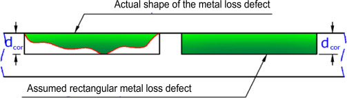

Calculate failure pressure of the corroded pipe according to Section 8.2 of DNV-RP-F101. The estimation is valid for single isolated metal loss defects of the corrosion/erosion type and when only internal pressure loading is considered.
The next assumption of the corrosion shape is adopted by DNV-RP-F101:

There dcor represents argument depth.
Arguments
- d
nominal outside diameter of pipe, [mm]. Type:
assert_double.- wth
nominal wall thickness of pipe, [mm]. Type:
assert_double.- uts
ultimate tensile strength (UTS) or specified minimum tensile strength (SMTS) as a characteristic of steel strength, [MPa]. Type:
assert_double.- depth
measured maximum depth of the corroded area, [mm]. Type:
assert_double.- l
measured maximum longitudinal length of corroded area, [mm]. Type:
assert_double.
Value
Estimated failure pressure of the corroded pipe, [MPa].
Type: assert_double.
Details
In contrast to ASME B31G-2012 property of pipe metal is characterized by specified minimum tensile strength - SMTS, [N/mm²], and SI is default unit system. SMTS is given in the line pipe steel material specifications (e.g. API 5L) for each material grade.
At the same time Timashev et al. used ultimate tensile strength - UTS in place of SMTS. So, for the case those quantities may be used in interchangeable way.
Numeric NAs may appear in case prescribed conditions of
use are offended.
References
Recommended practice DNV-RP-F101. Corroded pipelines. DET NORSKE VERITAS, October 2010.
ASME B31G-2012. Manual for determining the remaining strength of corroded pipelines: supplement to B31 Code for pressure piping.
S. Timashev and A. Bushinskaya, Diagnostics and Reliability of Pipeline Systems, Topics in Safety, Risk, Reliability and Quality 30, doi:10.1007/978-3-319-25307-7 .
Examples
library(pipenostics)
# Consider two pipes with the next specifications:
d <- c(812.8, 219.0) # [mm]
wth <- c( 19.1, 14.5) # [mm]
uts <- c(530.9, 455.1) # [N/mm²]
l <- c(203.2, 200.0) # [mm]
depth <- c( 13.4, 9.0) # [mm]
# Get the failure pressure for that pipes:
dnvpf(d, wth, uts, depth, l)
#> [1] 15.86626 34.01183